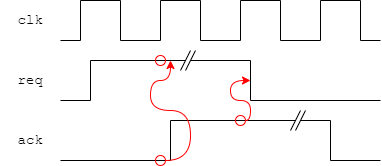
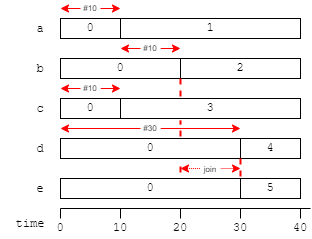

Simulation is part of modelling; the accuracy of the model is refined as the design process progresses.
Caveat: The intention of this material is to give enough information to facilitate design. It is not intended to be a complete description of all the available facilities.
“A little inaccuracy sometimes saves tons of explanation.”
Saki, The Square Egg (1924)
The purpose of simulation is to verify that, when you build something, it will work. First time and every time. It is widely practised in engineering when something expensive or potentially dangerous is being built. Examples include:
Simulation is used at a number of levels from the design concept to the electrical (and, often, thermal) properties of the final product. In practice this may not stop at the chip level as these properties are also important in larger structures, up to complete systems.
Simulation gives the ability to determine the properties of a proposed system under a set of potential operating conditions. Remember – it only gives an approximation to ‘reality’ within the limits of the model used; this can still be very useful.
There is a tradeoff between the accuracy of the model and the effort required to produce it. In our case this usually means that more accurate simulation takes longer and requires more expensive computers with more memory, filestore, etc. Therefore there is usually a pragmatic compromise on accuracy at various stages of development.
One big advantage of simulation is that the model gives observability. Consider building a chip, ignoring the time and cost of manufacture for the moment. If something is wrong then is it possible to diagnose the fault from the outside? This may be feasible in a simple, combinatorial device this becomes difficult once there is hidden state. At the System-on-Chip (SoC) scale then this is effectively impossible.
Simulated models allow otherwise hidden nodes to be examined so that problems can be found much more easily. Particular areas which are suspect can be examined in fine detail.
To finalise an ASIC design a number of different ‘levels’ of simulation must be performed.
Each looks at different aspects of the design.
This section concentrates on functional verification.
The other aspects will be revisited later.
A high-level model (e.g. a TLM – Transaction Level Model) can demonstrate the feasibility of an architecture. It may be refined down to a cycle-accurate model – i.e. one in which each operation can be timed by counting clock cycles – but not (sensibly) much further.
There is then a need for translation into a behavioural model which is the function of a Hardware Description Language (HDL). A behavioural model may be just that – a model – or it may be a synthesizeable Register Transfer Level (RTL) description which will eventually be converted into hardware.
The translation process from TLM to RTL may be error-prone; there is also the possibility of discovering previously untested cases as the model is prepared in more detail. There is therefore a need for simulation tests at the behavioural level. These tests perform functional verification, i.e. they check that the logic does what it is intended to.
Functional tests do not guarantee that a resultant circuit will fulfil its requirements: for example the design may be too slow to be clocked sufficiently fast to meet real time requirements. Neither do they guarantee that the result will be constructable.
Functional tests typically use assumptions of synchronous behaviour and do not give any absolute timing information; elapsed time is measured in clock cycles. The designer may have a target clock speed in mind at this point; whether the design will achieve that is still unknown. Thus a design may do what it is intended to do but may not meet real-time requirements.
It is possible to annotate the HDL description with timing estimates to gain some idea of timing behaviour but these are necessarily imprecise. Circuit speed is greatly influenced by its physical properties which are not yet known.
Timing verification involves estimating and summing the various delays in an implementation to identify and isolate the critical path. This can only be achieved once a design has been synthesized into the target technology so that a netlist of gates, flip-flops etc. is available.
There are typically two phases to timing verification: pre- and post-layout. Having obtained a netlist, CAD tools can produce an estimate of the critical path delay. Modern tools are smart enough to try to factor in wiring loads as well as gate delays; however the true wiring delays are not yet known. This will give a moderately accurate guide to the maximum clock frequency. If the circuit is apparently too slow at this point it's ‘back to the drawing board’.
Post-layout synthesis depends on a netlist following the Place-And-Route (PAR) stage and has a better estimate of timing. As well as wiring delays, other factors such as the need to add buffers (electrical amplification) may have been introduced. The simulation model used may be more precise, too. All this means is that it takes longer and, if a problem is found here, it is more expensive to iterate the design again.
Another concern here are the ‘edge speeds’ – the time it takes to switch wires between digital states. An edge which is too slow harms circuit performance but is also more vulnerable to electrical noise inducing extra switching. Not all gates will have the same input threshold so a slow edge may apparently switch at different times when interpreted at different destinations.
A real circuit needs power, something neglected up to this point. When a gate switches its output there is a surge of charge onto or off a power supply. All these cause a (varying) current in the power supplies. There are (at least!) two serious concerns:
Are the wires big enough to handle the current? A too-small wire is a fuse and will blow! More likely, there may be a wire that's a bit thinner than is desirable which will ‘age’ due to electromigration and shorten the lifetime of the device.
The gate models assume a supply of a certain voltage. The power supplies carry current and have resistance, therefore will impose a voltage drop (Ohm's law). Thus the supply voltage at the centre of a chip (furthest from the connections) will be lower than that at the edges. The power supply wiring must be adequate to keep this drop within bounds for previous assumptions to remain valid. In case of difficulty, the usual solution is to force an increase in the number/width of the supply wires.
Of course the power that goes in comes out as heat. Thus there may be thermal modelling ... and so on ...
This depicts a typical RTL development flow. Source code is developed
(possibly also as schematic diagrams although this is currently
decreasing in popularity), then processed and simulated with some form
of testbench/stimulus. The output can typically be viewed as traces
with (selected) signals vs. time and potential problems can (perhaps)
be spotted. Additionally the simulator may produce output which can
be compared with expected independently generated results,
either by the testbench or using some external application.
Feedback is used to correct the design, sometimes also the testbench
and even (occasionally) the expectation if an earlier mistake has
escaped notice†.
To verify that the RTL description fulfils all the logical operations required of the system.
You develop (a piece of) a system. It has to perform a certain set of functions and fit the appropriate set of interfaces. To do this a set of tests are required.
Some tests may already exist:
You provide:
You can collect:
If any of the above criteria fail later then the RTL will need redesigning.
Any editing may change (break) the functionality, so retesting is important.
Intention: reduce the number of redesign cycles to a minimum. Experience helps with this – but is not a sure guide.
†Shouldn't happen but we're all human.
Objective is to verify the logic behaviour of the design.
Try to exercise every function.
Functional simulation – which you should be familiar with – is a test of the logic operation of a design. Higher level models should have shown that the algorithm can work; now the implementation must be verified.
Functional simulation is (primarily) a digital, event-driven simulation. This allows the simulators to run quite quickly which, in turn, allows a lot of test patterns to be exercised in a sensible elapsed time.
Simulation (of a synchronous design) at this level will be cycle accurate so the number of clock pulses taken can be counted. This gives a better ‘feel’ for the timing of a function. This may allow some redundant cycles to be identified and eliminated. If the design has a constrained clock speed then accurate performance estimates are possible, assuming the target clock speed can be achieved.
What this form of simulation doesn't give directly is any assurance that a particular clock frequency can be achieved by the synthesized logic. Delays can be included in the simulation but, in the first instance, these are simple estimates. Later, when the design has been developed further, more realistic delays can be extracted from the synthesized circuit and back-annotated to improve the realism of the simulation.
However, typically, a few test patterns are able to show timing problems. The main value of functional simulation is to provide good test coverage of the logical design.
To avoid the simulation ‘running away’, a statement like:
initial #10000 $stop;
can halt a simulation after a time limit.
Example: a handshake signal:
(Note: the protocol shown here is not quite the same as in the lab.)
The test block needs to provide ‘req’ which interacts with ‘ack’.
One way: work out in advance (by hand?) the expected response times of the ‘ack’ signal and drive ‘req’ accordingly.
Another way — use the language to respond to the test block.
…
while (ack == 1) @ (posedge clk); // AAA
req <= 1;
while (ack == 0) @ (posedge clk); // BBB
req <= 0;
…
This:
The details of such a handshake can be ‘hidden’ in a task.
initial // Input handshake
begin
req_in <= 0;
@ (posedge clk);
req_in <= 1;
while (ack_in == 0) @ (posedge clk);
req_in <= 0;
while (ack_in == 1) @ (posedge clk);
repeat (10) @ (posedge clk); // Pause before continuing
...
end
initial // Output handshake
begin
ack_out <= 0;
while (req_out == 0) @ (posedge clk);
repeat (2) @ (posedge clk); // Choose to insert extra delay
ack_out <= 1;
while (req_out == 1) @ (posedge clk);
ack_out <= 0;
...
end
This is an illustrative example. A real test would continue, for
example stalling in different phases, trying to overfill the FIFO etc.
There would probably be some data carried through (and tested for
correctness) too!
A good verification test will subject the Device Under Test to
examples of any situation it might legitimately experience in
operation.
Be vicious! Try and break it!
Note: it is convenient (but not compulsory) to use independent
blocks (threads) at the input and output. This allows freedom of
timing so that (for example) if the latency of the FIFO is
changed the test will still work.
In the example above the output acknowledgement has been arbitrarily
delayed; a thorough test might use a range of delays (including none)
– for example using a random value.
if (Boolean_expression) statement_1 {else statement_2}
‘if’ has several uses:
It may take an
else clause.
Note: In synthesizable, combinatorial logic the
else may
be wanted to avoid creating a latch, inadvertently.
repeat (100)
begin
@ (posedge clk)
if (req) ack <= 1;
else ack <= 0;
end
while (Boolean_expression) statement
for (addr = 0; addr < 1024; addr = addr + 1) statement
forever statement
To stop a simulation due to an error, try:
event failed;
...
always @ (failed) #100 $stop;
...
...
if (<error condition>) -> failed;
If you haven't met Verilog events yet, keep reading.
‘while’ functions much as you would expect. It is not synthesizeable.
...
@ (posedge clk) req <= #1 1;
@ (posedge clk); // Wait at least one cycle†
while (ack != 1) @ (posedge clk); // Wait for response
req <= #1 0;
... // May not care about
... // completing handshake immediately
while (ack != 0) @ (posedge clk); // Wait for response
...
† Only needed if ack is/may be driven combinatorially and could rise immediately. Good practice would have a flip-flop between, so this cycle would take place inside the while.
Request is asserted and given time to be seen.
If there is no acknowledgement, insert another clock cycle (and try again).
Continue waiting until the acknowledgement appears.
Probably go and do something else for a while.
(Before next handshake) test if acknowledgement removed and wait until it is.
‘repeat ()’ is a simple loop which iterates the following statement a number of times.
‘for’ has C-like function and syntax although the “i++” syntax is not
implemented in basic Verilog.
(The latter is present im SystemVerilog.)
Hardware, and therefore a HDL, is highly parallel too.
In a parallel block, all statements are executed ‘simultaneously’, as if they were in separate blocks.
Sometimes this make no difference. It is important when inserting delays, however.
These blocks can be nested.
Blocks compose much as you might expect. In terms of timing a sequential block will take the sum of its internal delays whereas a parallel block will take the maximum of its individual delays.
initial
begin
a = 0; b = 0; c = 0; d = 0; e = 0;
 fork
begin
#10 a = 1;
#10 b = 2;
end
fork
#10 c = 3;
#30 d = 4;
join
join
e = 5;
#10 $stop;
end
Individual blocks can be given unique names after the begin or fork.
begin: my_block
This can sometimes aid in identification in traces.
As far as physics currently understands time is a single continuous dimension.
Simulation time is discrete but multidimensional!
Naturally, none of this relates to the actual time taken to run the simulation, which depends on how much switching activity takes place in the design.
always @ (posedge clk) a = b; // Blocking
always @ (posedge clk) b = a; // Blocking
always @ (posedge clk) x <= y; // Non-blocking
always @ (posedge clk) y <= x; // Non-blocking
After a clock edge:
However:
is entirely predictable – if rather pointless.always @ (posedge clk)
begin
a = b;
b = a;
end
always @ (posedge clk) x <= a; // Non-blocking
always @ (posedge clk) a = b; // Blocking
In simulation x will always take the value from b.
However a synthesizer will probably see this as two sequential flip-flops.A synthesized circuit will behave differently from the simulation!
Okay, that's the wrong thing to happen but complaining won't change it.
When simulating synchronous circuit models the most convenient thing to write is:
always @ (posedge clk)
if (count < 9) count <= count + 1; else count <= 0;
‘count’ then changes:
The resulting trace may be slightly misleading although it is safe.
But what if the inputs (RHS) are generated with a blocking assignment ...
Therefore keep all blocks and modules in the same style!
(Perhaps) the obvious way to stimulate a design may be something like this:
initial clk = 1;
always #5 clk <= !clk;
initial
begin
data = 0;
#10;
data = 1;
#10;
data = 2;
#10;
end
always @ (posedge clk) value_1 <= data;
always @ (posedge clk) value_2 <= value_1;
Unfortunately – because the blocking assignment (data) completes before the non-blocking assignments – this will lead to the following timing relationship:
Offsetting input changes slightly from the clock may help.
parameter period = 10; // Makes changes easier
initial clk = 1;
always #(period/2) clk <= !clk;
initial
begin
#1; // Inputs delayed
data = 0;
#period;
data = 1;
#period;
data = 2;
#period;
end
always @ (posedge clk) value_1 <= data;
always @ (posedge clk) value_2 <= value_1;
There are a couple of disadvantages of the form above.
parameter period = 10; // Makes changes easier
initial clk = 1;
always #(period/2) clk <= !clk;
initial
begin
data <= #1 0; // Inertial delay
#period;
data <= #1 1;
#period;
data <= #1 2;
#period;
end
always @ (posedge clk) value_1 <= #1 data;
always @ (posedge clk) value_2 <= #1 value_1;
The evaluation here takes place at the clock edge: it is just the
result assignment which is delayed.
Suggest that this is clearer!
Rather than inserting explicit delay times it may be more robust to count the clock edges. The ‘@’ symbol means ‘at the next event from the following list’ so: ‘@ (posedge clk)’ means ‘wait until the next active clock edge’ — this will always keep execution in synchronisation with the clock.
‘repeat (10) @ (posedge clk)’ will, of course wait for the tenth successive clock edge etc.
Here are some convenient methods:
#20 a = 1l; // Delay in execution of sequential block
wire #4 q; // Declare a ‘net delay’ ...
assign q = a & b; // q changes 4 timesteps after an input change
register <= #10 input_value; // Propagation delay on signal
Time is modelled in two ways:
Examples:
initial
begin
a = 0;
#10;
a = 1;
end
assign b = !a; assign c = !b;
| Time | action |
|---|---|
| 0 | a = 0 |
| 0 | b = 1 |
| 0 | c = 0 |
| 10 | a = 1 |
| 10 | b = 0 |
| 10 | c = 1 |
At any point there is only one thing which is scheduled to happen, but a change schedules a(n immediate) change on b, etc.
initial
begin
a = 0;
#10;
a = 1;
end
assign #5 b = !a;
assign #6 c = !b;
| Time | action |
|---|---|
| 0 | a = 0 |
| 5 | b = 1 |
| 10 | a = 1 |
| 11 | c = 0 |
| 15 | b = 0 |
| 21 | c = 1 |
Delays can alter when switching occurs.
Delays can also be inserted within assignments to delay the assignment without retarding the flow of execution, e.g.:
a <= #10 b;
For added veracity it is possible to specify different rising, falling and turn-off delays for a signal by listing these in brackets. E.g.
#(3,2)
means a rising delay of 3, a falling delay of 2. The turn-off delay has not been specified so defaults to the minimum of these (if appropriate).
*** Expand on/link out to event-driven systems ***
Digital simulation is usually ‘event-driven’.
Events are awaited using the ‘#<value> @’ keyword.
Waits for the next time the event is detected in the future.
Not a strict thread rendezvous.
Events are things that happen during execution; they can be used to control the progression of a test sequence. An event can be something like:
(posedge clk)
It is possible to wait for events within a test harness. The ‘@’ ‘keyword’ really means ‘wait until the following condition is satisfied’. This could be as simple as synchronising with the next clock cycle:
initialWhich will wait until the specified event occurs. These can be used in combination with other operators. For example:
repeat ($random & ‘h3) @ (posedge clk);Will wait for between zero and three (inclusive) rising edges of the clock.
Events can also be declared and generated in a behavioural model. For example, here is a mechanism for generating reports when errors are detected:
event error; // Declare event
always @ (error) $display(“Error at time %t”, $time);
initial
begin
... // Simulation proceeds
if (<error condition>) -> error; // Generate event
...
end
Such signalling can be used to allow different blocks to interact in a test file. For example:
initial
begin
[Do reset sequencing]
-> reset_done;
end
initial
begin
@(reset_done)
[Start test sequence]
...
end
For more complete examples, try: http://www.asic-world.com/verilog/art_testbench_writing3.html
Three options:
Probably the easiest way to do this is to read a file of expected results into a memory residing in the test harness. Initialise a pointer to the start of the file and increment it every time a comparison is made.
reg [7:0] results [0:1023];
reg [10:0] result_pointer;
reg [7:0] comp_value;
initial $readmemh(<filename>, results);
initial
begin
result_pointer = 0;
...
test_next(comp_value); // Fetch value
...
end
task test_next; // Use a task for convenience
output [7:0] value;
begin
if (result_pointer > 1023)
begin
$display(“Out of data!”);
$stop; // Oops! Error
end
else
begin
value = results[result_pointer];
result_pointer = result_pointer + 1;
end
end
endtask
There are several ways to do this.
$display
$write
C-like print statements: (nearly) identical except
$display(…)
adds a LF
to the string end.
If you want to stay on the same line
$write(…)
will do this.
Suggestions:
e.g.
$display(“Starting test”);
...
if (q != 32'h0000_0000)
$display(“Unexpected value: q = %X”, q);
Sometimes it is convenient to watch particular signals rather than all signals through time. This can be done with the $monitor task.
initial
$monitor(“this = %x that = %x at time %t”,
this, that, $time);
This is similar to:
always @ (this, that)
$display(“this = %x that = %x at time %t”,
this, that, $time);
allow you to create your own output files. (“$fwrite” is the same as “$fdisplay” except for line-feeds.) Their use, including file handles, is similar that which should be familiar from C programming.
When a state-holding element is switched on it will settle into a stable state.
It is not predictable what state this will be, so it is unknown.
Does this matter? In some cases it does, in others it doesn't.
Example: ARM registers
I.e. only the essential values are cleared Rule of thumb:
Undefined (“unknown”) values tend to propagate through logic.
This is usually a good thing as it acts as a warning that something is wrong. Learn to exploit them!
The question of whether to include a reset on a flip-flop has no simple answer.
The inclusion of reset logic imposes a small power/area penalty on a flip-flop.
The fan-out of the reset network is typically very large and consumes some resources.
Failing to reset a flip-flop which needs to be defined can be catastrophic.
Case: consider a clock divider flip-flop:
As a circuit this will function because it is in some digital state and will toggle to the other when clocked.
In simulation it will start unknown and always remain that way.
In Verilog you could ‘cure’ this anomaly with an ‘initial’; but if that is accidentally done to something where the phase matters then it's Doom again.
In general:
Some designers prefer to reset every flip-flop as a matter of routine.
(There is a small additional cost in size and speed.)
You have to decide which approach works for you.
RAM does not have reset. If you expect a RAM to contain some values (typically zeroes) you will have to write these in actively.
The state of an FPGA is downloaded when it is configured. This means:
This means, for example:
The second of these allows the creation of on-chip ROMs, useful (for example) in bootstrapping a processor or providing look-up tables.
Note that these facilities are provided because of the particular FPGA characteristics. They would not be available on an ASIC.
Unknown/undefined states are a characteristic of digital simulation. Verilog simulation is digital, with signals adopting states {‘0’, ‘1’, ‘x’, ‘z’} and these have well-defined operations. For example:
0 && x == 0
1 && x == x
Digital (functional) simulation does not represent intermediate states, transition (edge) speeds etc.
Not all simulators work this way. Circuit-level simulators represent the analogue voltages on the wires to give more accurate estimates of the behaviour of the implementation. These values are (in principle) continuous, therefore always ‘known’, therefore they have to be assumed at start-up.
Unknown values will not appear. However the assumed values may not be those which occur in a real circuit and therefore should not be relied on.
This is another good reason for running a functional simulation as part of the design flow.
An if clause is taken if the predicate is ‘true’ (i.e. 1).
An else clause is taken if the predicate is not ‘true’ (i.e. 0 or x or z).
Verilog defines its operators as:
When executing an ‘if’ in a Verilog simulation a binary decision is made using three possible input values.
The case equality operators can be used to eliminate one of these.
These are useful, for example, in ‘if’ tests.
0 == 0 // Result is true (1)
0 == x // Result is unknown (x)
0 === x // Result is false (0)
0 != x // Result is unknown (x)
0 !== x // Result is true (1)
x === x // Result is true (1)
Imagine you are testing for a particular pattern.
if (data != test_value) $display(“Error”);
Bad idea! If the data and test_value are both defined then it works but if either is ‘unknown’ (x) then the expression will return ‘unknown’. This isn't ‘true’ so the $display statement is not reached.
This could be cured by:but this is better:if (data == test_value); // do nothing
else $display("Error");
if (data !== test_value) $display(“Error”);
Here is a ‘broken’ AND gate:
module my_and (input wire a, b,
output reg q);
always @ (a, b)
if (a)
if (b) q = 1;
else q = 0;
else q = 0;
endmodule
Synthesized, this should works fine. However in simulation it will always produce a logic value output, even if the inputs are undefined.
Compare:
| my_AND | 0 | 1 | X | Z |
|---|---|---|---|---|
| 0 | 0 | 0 | 0 | 0 |
| 1 | 0 | 1 | 0 | 0 |
| X | 0 | 0 | 0 | 0 |
| Z | 0 | 0 | 0 | 0 |
| AND | 0 | 1 | X | Z |
|---|---|---|---|---|
| 0 | 0 | 0 | 0 | 0 |
| 1 | 0 | 1 | X | X |
| X | 0 | X | X | X |
| Z | 0 | X | X | X |
This may be harmless in itself but has the potential to hide other faults.
case (abc)
2'b00: result = 1;
2'b01: result = 2;
2'b10: result = 3;
default: result = 0;
endcase
casex (xyz)
2'b00: result = 1;
2'b01: result = 2;
2'b1x: result = 3; // Taken for cases 2 and 3
default: result = 0; // Redundant - but good (cautious) practice
endcase
A ‘case’ statement selects one entry from a list of options; the first one which matches the criteria.
The following example illustrates how all cases of a single wire could be monitored.
case (some_wire)
1'b0, // Note list of cases
1'b1: $display(“Wire has value %d”, some_wire);
1'bx: $display(“Wire is unknown”);
1'bz: $display(“Wire is floating”);
endcase
This facility is useful in testing and, perhaps, modelling; it is not relevant to synthesis because a physical wire will always have a value which is interpreted in some way as a digital signal.
These allow ‘don't care’ inputs in a case statement. The difference is that ‘casez’ treats only ‘Z’ inputs as don't cares whereas ‘casex’ accommodates both ‘Z’ and ‘X’ equally.
‘casex’ is possibly the more useful and serves as an example.
casex
Sometimes it is useful to be able to build a circuit where part of an input is not compared, i.e. it is a ‘don't care’ value. Not caring what a value is is not the same as not knowing what a value is; however (confusingly?) Verilog uses ‘x’ for both cases.
Imagine decoding a microprocessor instruction. Not all the bits are used to determine the instruction type. If different sets of bits need to be examined, ‘casex’ allows these to be specified in a single, simple statement.
In the following (simplified) ARM instruction decoder the ‘x’s are bits which are not considered by the case statement.
casex (instruction[27:24])
4'b00xx: $display(“Data processing”);
4'b01xx: $display(“Load/store”);
4'b100x: $display(“Load/store multiple”);
4'b101x: $display(“Branch”);
4'b110x,
4'b1110: $display(“Coprocessor”);
4'b1111: $display(“SVC (aka SWI)”);
endcase
Bases other than binary can be used. In hexadecimal an ‘x’ represents four don't care bits, in octal, three. It is not meaningful in decimal.
Without casex the decoder would probably look something like:
if (instruction[27] == 0)
if (instruction[26] == 0) $display("Data processing");
else $display("Load/store");
else
if (instruction[26] == 0)
if (instruction[25] == 0) $display("Load/store multiple");
else $display("Branch");
else
if ((instruction[25] == 0)
|| (instruction[24] == 0)) $display("Coprocessor");
else $display("SVC (aka SWI)");
Hopefully the first example is easier to follow!
Next notes: Verification & Testing
Short aside on Event Driven Simulation
Problems with glitches in simulation